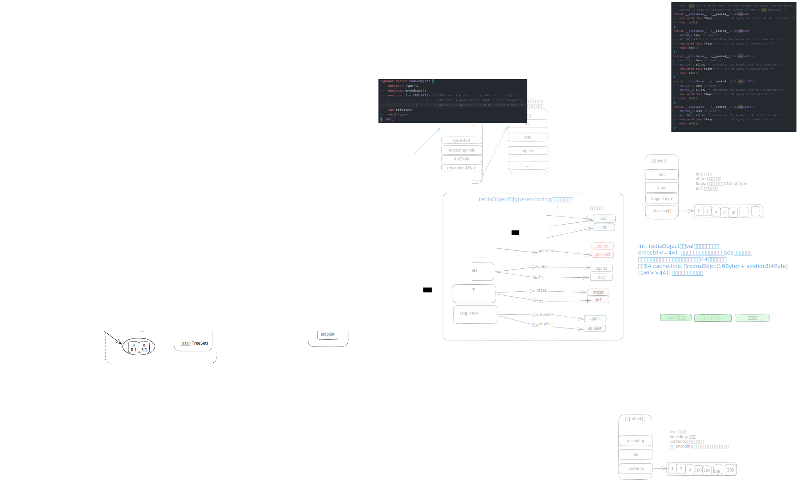

命名前缀:
技巧💡
| 类型 | 作用 | 命名 | 使用场景 | |
|---|---|---|---|---|
| String | value: 可以是字符串、数值、浮点数。支持自增、自减操作 | get: 获取 set: 设置 del: 删除，所有类型都不支持 | 缓存、分布式锁、counter | |
| string | 数组，类比ArrayList | lpush lpop lrange lindex rpush rpop | 消息队列 | |
| Set | set,类比HashSet | sadd,SMEMBERS, SISMEMBER, SREM | 添加tags | |
| Hash | map, 类比hashmap | HSET，HGET, HGETALL, HDEL | 散列存储json | |
| ZSET | 有序的set,类比 TreeSet | ZADD, ZRANGE, ZRAGEBYSCORE, ZREM | 排行榜 | |
| HyperLogLog | 基数统计 | 基数统计 | ||
| Stream | 简易消息队列 | |||
| GEO | 地理位置相关 | LBS，附近的人 |

数据类型
redis提供了多种数据类型，比如string、list、set、hash、zset等。但是底层结构真正使用的是另外一套结构。可以根据内容的长度等选择合理的底层数据结构，尽可能的提供效率。底层数据结构对使用者来说，是透明的。使用者无需知道底层是用什么数据结构进行存储。
通过 type key可以查看类型
通过object encoding key 查看底层的数据结构

Keys & Expiration
redis是一个键值对数据库，其中key是string类型，value可以是string,list,set等丰富的数据类型。
一般查询有哪些key，使用 keys 和 scan(类型cursor)命令。生产上，不能使用keys,会导致redis阻塞。而应该使用游标的方式.
key的组成 —> 任意字符串。
-- keys *
KEYS pattern
-- scan
scan 0 Match *name* Count 1过期时间，redis一般都会设置个过期失效。过期时间到了之后，redis会自动进行回收。
expire 单位是秒
pexpire 单位是毫秒
expireat 指定时间戳，单位秒
pexipre 指定时间戳，单位毫秒
ttl 查看时间，单位秒
pttl 查看时间，单位毫秒
PEXPIRE key 1000 ==> EXPIRE key 1
Hash
类似java中的haspmap<string,string>，value类型只能是string(注意，这里说的string是redis中的sds，代表可以是number,float，text等)。value中不能包含list,set等。这也是与rejson的一个区别。